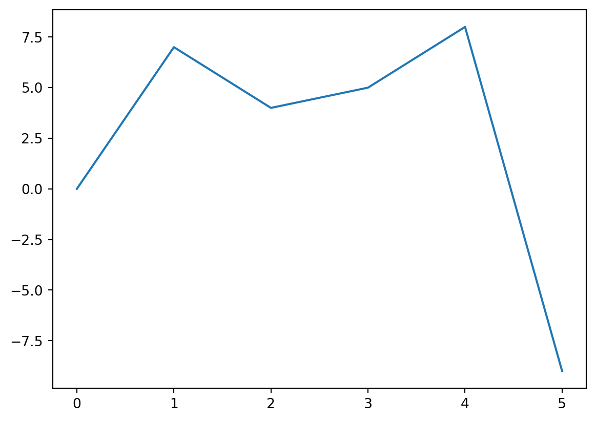
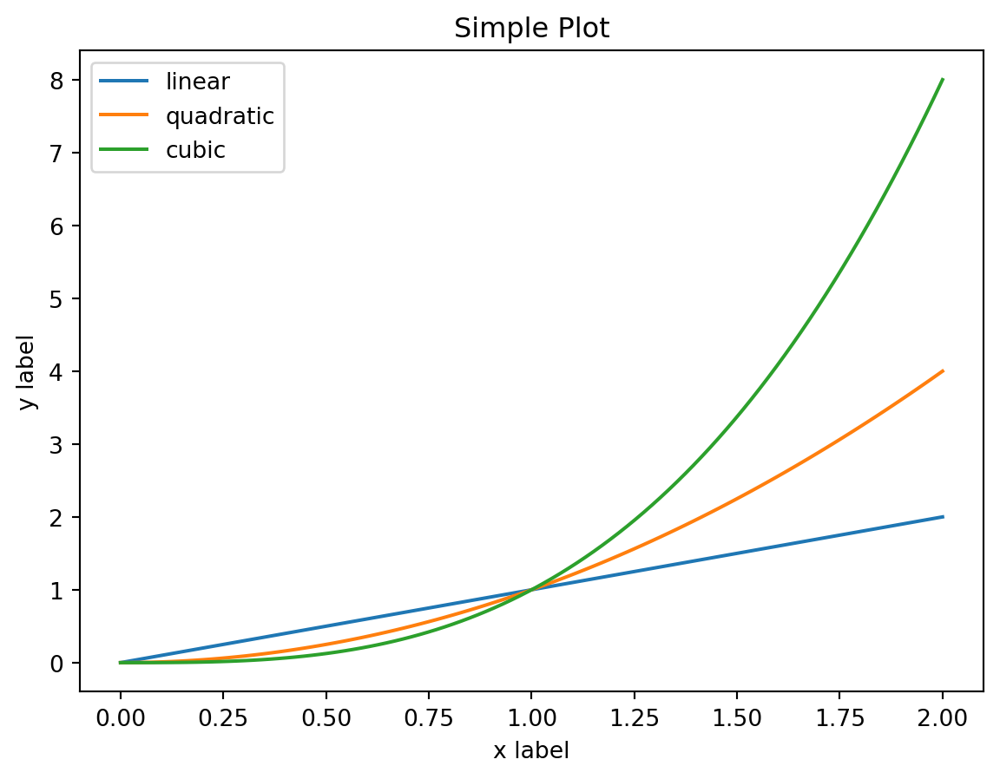
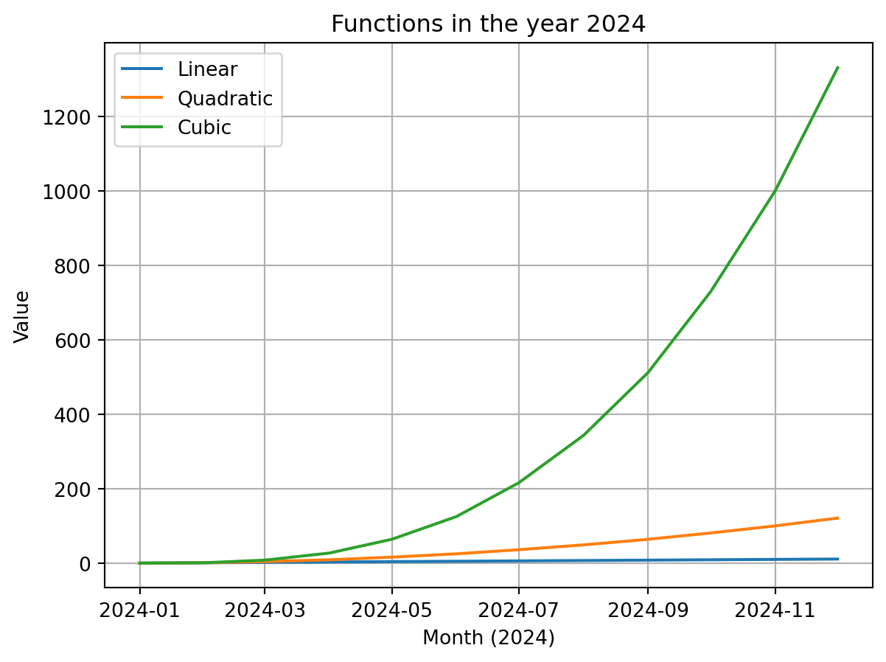
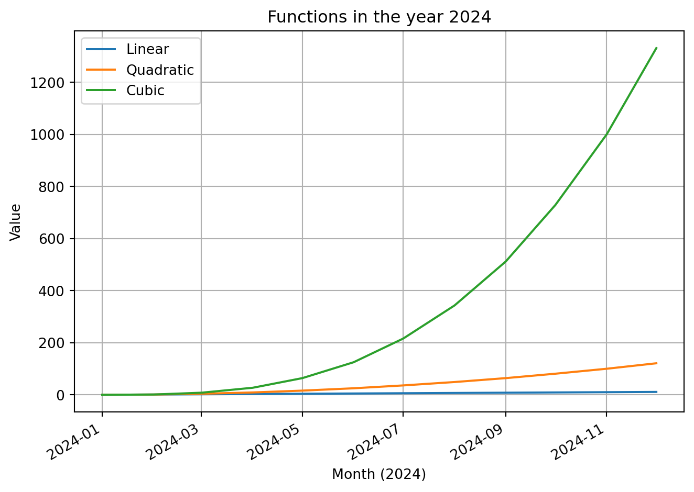

import matplotlib.pyplot as plt
x = [0, 7, 4, 5, 8, -9]
plt.plot(x)
plt.show()
A line chart is one of the most powerful data visualization tools, allowing us to spot relationships and trends that might otherwise go unnoticed in raw data. Below is a detailed explanation of when and why it’s worth reaching for this type of chart.
A line chart works best when we want to show changes in values over time or as a function of another continuous variable. Its strength lies in its ability to reveal continuous relationships between data points, making it easy to track trends and patterns.
A line chart perfectly illustrates how data changes across successive units of time. It is invaluable for presenting: - Economic trends (GDP growth, inflation, unemployment rates) - Changes in financial markets (exchange rates, stock prices, interest rates) - Climate and weather data (temperature changes, precipitation, pollution levels) - Health indicators (heart rate, blood sugar levels, blood pressure)
When we want to examine how one variable influences another, a line chart allows for an intuitive representation of these relationships: - The relationship between level of education and average earnings - The correlation between age and specific skills - The dependence between advertising spending and sales results
A line chart enables effective comparison of several data series on a single chart: - Analysis of sales of different products over time - Comparison of results across different regions, teams, or countries - Comparison of actual results with planned targets - Comparison of different economic indicators over the same period
Lines on a chart help to see how changes in one variable may influence others: - Examining the impact of fuel prices on sales of different types of vehicles - Analyzing the relationship between ambient temperature and energy consumption - Assessing the impact of marketing campaigns on brand awareness
A line chart makes it easy to quickly notice outliers and moments of significant change: - Detecting unusual patterns in financial data - Identifying turning points in social trends - Recognizing seasonal fluctuations in data
Although line charts are most suitable for continuous data, they can also be used to present discrete data, as long as there is a logical connection between successive points. For example, monthly sales results are discrete data, but presenting them as a line will help reveal the annual trend.
It should be remembered, however, that connecting points with a line suggests continuity between them. If there is no logical continuity between data points (e.g., when comparing unrelated categories), a better choice will be a bar chart or scatter plot.
import matplotlib.pyplot as plt
x = [0, 7, 4, 5, 8, -9]
plt.plot(x)
plt.show()
x = np.linspace(0, 2, 100): creates an array x with 100 evenly spaced values from 0 to 2 (inclusive), using the linspace function from the numpy library.
plt.plot(x, x, label='linear'): draws a linear chart (y = x) using the values from the x array.
plt.plot(x, x**2, label='quadratic'): draws a quadratic chart (y = x^2) using the values from the x array.
plt.plot(x, x**3, label='cubic'): draws a cubic chart (y = x^3) using the values from the x array.
plt.xlabel('x label'): adds a label to the X axis.
plt.ylabel('y label'): adds a label to the Y axis.
plt.title("Simple Plot"): gives the chart the title “Simple Plot”.
plt.legend(): adds a legend to the chart, which shows the labels (label) for the individual lines.
plt.show(): displays the chart.

Object-oriented version:
import matplotlib.pyplot as plt
import numpy as np
fig, ax = plt.subplots()
x = np.linspace(0, 2, 100)
ax.plot(x, x, label='linear')
ax.plot(x, x ** 2, label='quadratic')
ax.plot(x, x ** 3, label='cubic')
ax.set_xlabel('x label')
ax.set_ylabel('y label')
ax.set_title("Simple Plot")
ax.legend()
plt.show()
Version with dates:
import matplotlib.pyplot as plt
import numpy as np
dates = np.arange('2024-01', '2025-01', dtype='datetime64')
index = np.arange(len(dates))
y_1 = index
y_2 = index ** 2
y_3 = index ** 3
plt.plot(dates, y_1, label='Linear')
plt.plot(dates, y_2, label='Quadratic')
plt.plot(dates, y_3, label='Cubic')
plt.xlabel('Month (2024)')
plt.ylabel('Value')
plt.title("Functions in the year 2024")
plt.legend()
plt.grid(True)
plt.show()
import matplotlib.pyplot as plt
import numpy as np
# Creating the data
dates = np.arange('2024-01', '2025-01', dtype='datetime64')
index = np.arange(len(dates))
y_1 = index
y_2 = index**2
y_3 = index**3
# Creating figure and axes in the object-oriented approach
fig, ax = plt.subplots()
# Drawing lines on the axes
ax.plot(dates, y_1, label='Linear')
ax.plot(dates, y_2, label='Quadratic')
ax.plot(dates, y_3, label='Cubic')
# Adding labels and title
ax.set_xlabel('Month (2024)')
ax.set_ylabel('Value')
ax.set_title('Functions in the year 2024')
# Adding legend and grid
ax.legend()
ax.grid(True)
# Adjusting appearance - optional improvements
fig.autofmt_xdate() # Automatic formatting of dates on the X axis for better readability
plt.tight_layout() # Automatic adjustment of chart size
# Displaying the chart
plt.show()